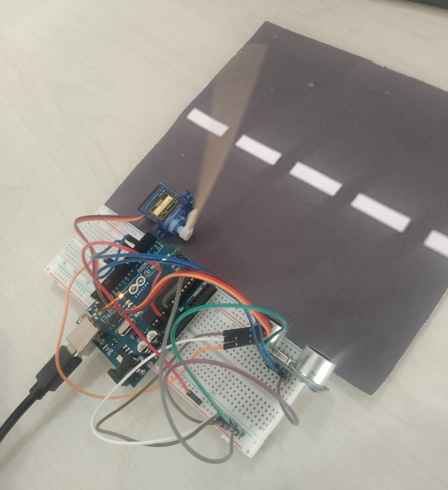

Do you remember when you first visited toll plaza? And the wonderful stopping mechanism they used to stop the vehicles passing by to collect funds? Yes we are making the exact same project here but in a mini scale.
In this project, we are making an exact replica found in toll plaza centers that is called as stopping system, The idea for this project was inspired from actual system, in actual toll they stop the vehicles using a stopper that is completely automated and it is activated when any vehicle passes in front the sensor, or some time it's activated through a button.
In our case, we are using an HC-SR04 or called as ultrasonic distance sensor to detect an obstacle(vehicle) and later to lift the barrier we are using micro servo, that is the mechanism involved in this project, Now let us dive into the building stage
Here is the output 😇
